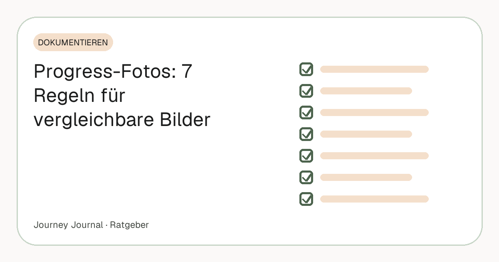

Ratgeber · Dokumentieren · 5 Min. Lesezeit
Progress-Fotos richtig machen: Die 7 Regeln für vergleichbare Bilder
Progress-Fotos sind nur dann ein Werkzeug, wenn sie vergleichbar sind – sonst sind sie Erinnerungen. Dieser Artikel ist die kompakte Checkliste: sieben Regeln, zu jeder der häufigste Fehler und die Lösung in einem Satz. Wer die Hintergründe, den Rhythmus und die Speicherung ausführlich lesen will, findet alles im kompletten Progress-Foto-Guide.

Teil unseres Guides: Progress-Fotos: Der komplette Guide – Aufnahme, Rhythmus, Vergleich, Speicherung
Kurz gesagt
- Regel 1–2: Uhrzeit und Licht – morgens nüchtern, Tageslicht von vorn, kein Blitz, kein Deckenlicht.
- Regel 3–4: Hintergrund und Kleidung – leere Wand, immer dieselben körperbetonten Sachen.
- Regel 5–6: Abstand und Winkel – Kamera auf Brusthöhe, Bodenmarkierung, drei feste Winkel.
- Regel 7: Vergleichen erst nach vier Wochen – fotografieren darfst du täglich.
- Der Fehler, der alle anderen schlägt: Bedingungen „ungefähr“ einhalten. Ungefähr ist beim Vergleich wertlos.
1. Immer die gleiche Uhrzeit
Morgens direkt nach dem Aufstehen, nach der Toilette, vor dem Frühstück. Dann ist dein Körper am „neutralsten“: kein Wasser aus dem Abendessen, kein Essen im Bauch, keine Blähungen vom Tag. Abends sieht derselbe Körper anders aus – nicht schlechter, nur anders – und ein Abendfoto gegen ein Morgenfoto zeigt diesen Unterschied, nicht deinen Fortschritt.
Häufigster Fehler: das Foto „nachholen“, wenn man morgens keine Zeit hatte. Lösung: Lieber einen Tag auslassen als ein unvergleichbares Bild in die Reihe setzen – oder die Erinnerung fest in den Morgen legen.
2. Gleichmäßiges Tageslicht von vorn
Stell dich mit dem Gesicht zu einem Fenster, nicht darunter und nicht dagegen. Deckenlicht wirft harte Schatten, die Konturen betonen oder verstecken – und damit den Vergleich verfälschen. Gegenlicht macht aus dir eine Silhouette. Kein Blitz: Er flacht alles ab und ist von Mal zu Mal nie gleich.
Häufigster Fehler: im Bad vor dem Spiegel mit Deckenlampe. Lösung: ein fester Platz vor einem Fenster, zur gleichen Tageszeit – das Licht bleibt dann über Monate ähnlich genug.
3. Neutraler Hintergrund
Eine leere Wand reicht. Alles, was im Hintergrund wechselt – Wäsche, Möbel, offene Türen –, lenkt beim Vergleich ab und erschwert es, Veränderung am Körper zu erkennen. Ein ruhiger, heller Hintergrund lässt die Kontur hervortreten.
Häufigster Fehler: wechselnde Räume. Lösung: ein Platz, immer derselbe – im Zweifel die Wand mit dem besten Fensterlicht.
4. Immer die gleiche, körperbetonte Kleidung
Kurze Hose, gegebenenfalls Sport-BH oder oberkörperfrei. Ein Shirt heute und ein Hoodie nächste Woche machen jeden Vergleich wertlos, weil Stoff Form verdeckt und Form das Einzige ist, was ein Foto zeigen kann. Es muss nicht wenig sein – es muss immer gleich sein.
Häufigster Fehler: „heute mal in dem Shirt, das ich sowieso anhabe“. Lösung: ein Set zurücklegen, das nur für die Fotos genutzt wird, und es nicht wechseln, auch wenn es irgendwann zu weit wird – gerade dann zeigt es etwas.
5. Kamera auf Brusthöhe, fester Abstand
Selfies aus der Hand verzerren: Der Arm ist zu kurz, die Weitwinkellinse macht Nahes groß, und die Kamera ist nie zweimal an derselben Stelle. Lehn das Handy an, nutze ein Stativ oder den Timer, Kamera etwa auf Brust- bis Bauchhöhe, zwei bis drei Meter Abstand. Markier deine Standposition auf dem Boden – Klebeband reicht – und die Position der Kamera gleich mit.
Häufigster Fehler: ein Schritt näher oder weiter weg. Ein Schritt verändert die Breite im Bild spürbar. Lösung: die Bodenmarkierung – oder ein Ghost-Bild des letzten Fotos im Kamerabild, dann stimmt der Abstand automatisch.
6. Drei feste Winkel
Front, Seite, Rücken. Arme leicht vom Körper abgespreizt, normale Haltung, nicht anspannen, nicht einziehen. Der Rücken wird fast immer vergessen – dabei verändert er sich oft zuerst sichtbar, und die Seite zeigt Bauch und Haltung, die die Front verbirgt. Jeder Winkel ist eine eigene Serie, die nur mit sich selbst verglichen wird.
Häufigster Fehler: die Seite mal links, mal rechts. Lösung: eine Seite festlegen und notieren. Die Pose für jeden Winkel im Detail beschreibt die 3-Winkel-Methode.
7. Nicht zu oft vergleichen
Fotografieren darfst du täglich – das schafft die Gewohnheit. Vergleichen solltest du erst nach drei bis vier Wochen. Alles davor ist Tagesrauschen, und Tagesrauschen demotiviert. Die Grundlage: Bei einem Tempo von 0,5 bis 1 Kilo pro Woche, wie es etwa der britische NHS empfiehlt, sind nach vier Wochen zwei bis vier Kilo weg – das ist die Größenordnung, ab der ein Unterschied auf Fotos erkennbar wird. Für andere Menschen liegt die Schwelle höher: Re und Rule (2016) fanden für das Gesicht etwa 1,3 BMI-Punkte, bei 1,75 m rund vier Kilo.
Häufigster Fehler: in Woche zwei „nur mal kurz“ vergleichen. Lösung: den ersten Vergleichstermin in den Kalender eintragen und sich daran halten. Warum Woche zwei die Abbruchphase ist, hat einen eigenen Artikel.
Die Checkliste zum Abhaken
Vor dem Foto: morgens, nüchtern, nach der Toilette · Fenster vor dir, kein Blitz · leere Wand · Foto-Set angezogen · Handy auf der Markierung, Brusthöhe · Timer an
Beim Foto: Front – Seite (immer dieselbe) – Rücken · Arme leicht abgespreizt · entspannt, ausatmen, auslösen
Danach: nicht ansehen, nicht vergleichen · in den eigenen Ordner, nicht in die Galerie · nächster Vergleichstermin steht im Kalender
Warum sich der Aufwand lohnt, zeigt die Forschung zur Selbstbeobachtung: Burke und Kollegen (2011) fanden in ihrer Übersicht durchgängig, dass regelmäßiges Dokumentieren mit größerem Gewichtsverlust verbunden ist. Fotos sind die Form davon, die nach einem Jahr am meisten bedeutet – wenn sie vergleichbar sind.
Häufige Fragen
Wie oft sollte ich Progress-Fotos machen?
Ein tägliches Foto für die Gewohnheit ist sinnvoll, ein sauberes Drei-Winkel-Set einmal pro Woche reicht für den Vergleich. Ernsthaft vergleichen solltest du erst nach 3–4 Wochen.
Sollte ich auf den Fotos anspannen?
Nein. Normale, entspannte Haltung – jedes Mal gleich. Angespannte Fotos sind schwer zu reproduzieren und zeigen Spannung statt Veränderung.
Welche Uhrzeit ist die beste für Progress-Fotos?
Morgens nach dem Aufstehen, nach der Toilette, vor dem Frühstück. Dann ist der Körper am neutralsten und die Bedingungen sind jeden Tag gleich.
Kann ich Progress-Fotos als Selfie machen?
Für die tägliche Gewohnheit ja. Für den Vergleich nicht: Handselfies verzerren und sind nie zweimal gleich. Timer oder Stativ, Kamera auf Brusthöhe, fester Abstand.
Wohin mit den Fotos?
Nicht in die normale Galerie, wenn du sie nicht beim Bilderzeigen sehen willst. Ein eigener, gesicherter Ordner – zum Beispiel in deinem Google Drive – ist sicherer und übersichtlicher.
Quellen
- Burke L. E., Wang J., Sevick M. A. (2011): Self-monitoring in weight loss: a systematic review. J Am Diet Assoc 111(1) – Selbstbeobachtung ist mit größerem Gewichtsverlust verbunden
- Re D. E., Rule N. O. (2016): Heavy Matters. Social Psychological and Personality Science 7(1) – Wahrnehmungsschwelle sichtbarer Veränderung im Gesicht: etwa 1,3 BMI-Punkte
- NHS: Losing weight – Getting started (12-week plan) – Empfohlenes Tempo 0,5–1 kg pro Woche
Dieser Artikel ersetzt keine ärztliche Beratung. Bei einer größeren Gewichtsreduktion ist eine medizinische Begleitung sinnvoll.